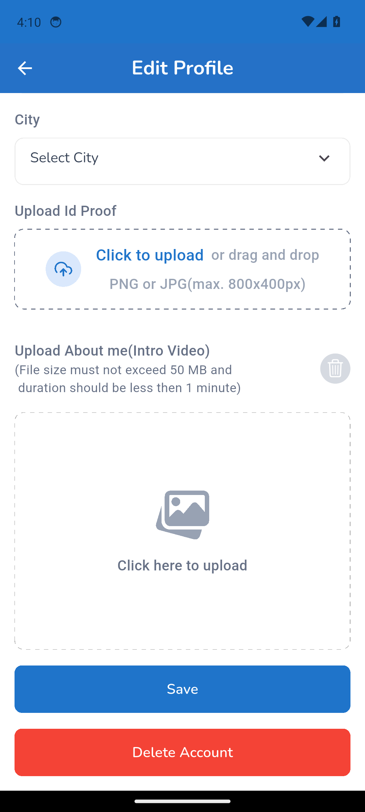

Mobile test report
Full test log · Passwords are masked. Element trees and the Appium log are in the run's mobile-test-results artifact.
1. mobile PRF-002 | Localite edits name, bio, and hosted experiences
tests/localite/mobile-edit-profile.spec.ts
Error: Step "Save the profile" failed: The profile was not saved: still on "Edit Profile" after Save (app message: "Please select the county").
at step (/home/runner/work/Imerzn-MobileTest/Imerzn-MobileTest/helpers/mobile-step.ts:11:11)
at async Context.<anonymous> (/home/runner/work/Imerzn-MobileTest/Imerzn-MobileTest/tests/localite/mobile-edit-profile.spec.ts:37:5)

2. mobile PRF-002 | Localite edits name, bio, and hosted experiences
tests/localite/mobile-edit-profile.spec.ts
Error: Step "Save the profile" failed: The profile was not saved: still on "Edit Profile" after Save (app message: "Please select the county").
at step (/home/runner/work/Imerzn-MobileTest/Imerzn-MobileTest/helpers/mobile-step.ts:11:11)
at async Context.<anonymous> (/home/runner/work/Imerzn-MobileTest/Imerzn-MobileTest/tests/localite/mobile-edit-profile.spec.ts:37:5)